Final Drive, Differential
Special Tools
Special tools, testers and auxiliary items required
• Sleeve (30 - 14)
• Tensioner hooks (VW 552)
• Spindle (10 - 222 A /11)
• Socket insert (T10099/1)
• Thrust piece (VW 432)
• Support channels (VW 457)
• Seal installer (2003/3)
• Pressure plate (VW 401)
• Sleeve (3144)
• Tube (3146)
• Counter hold (3145)
• Thrust piece (T10182)
• Thrust piece (T10260)
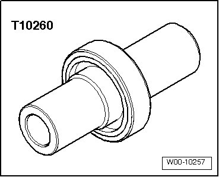
• Thrust piece (T10259)
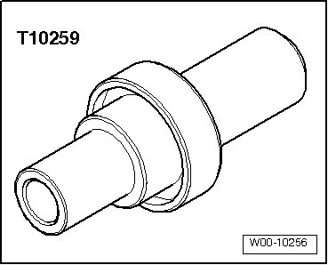
• Thrust piece (T10258)
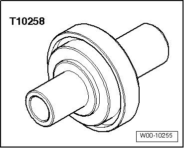
• Thrust piece (T10256)
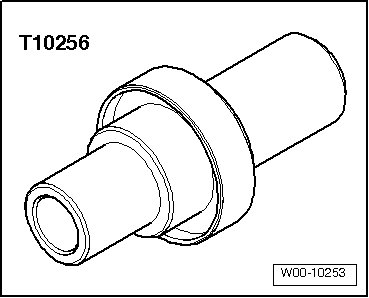
• Thrust piece (T10257)
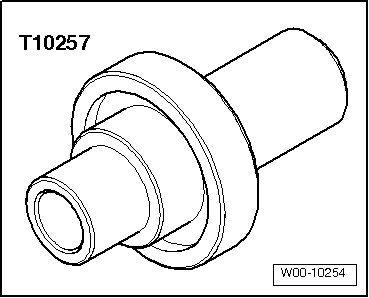
• Thrust piece (T10181)
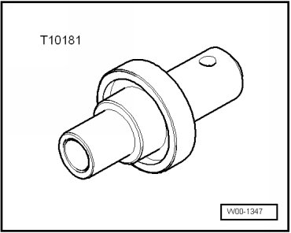
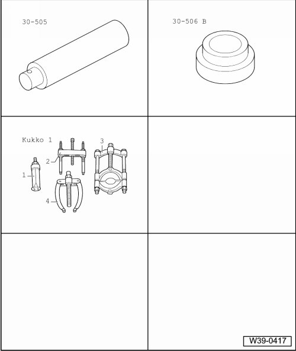
Special tools, testers and auxiliary items required
• Mandrel (30 - 505)
• Thrust pad (30 - 506 B)
• - 1 - - Kukko 21/6 Internal puller
• - 4 - - Kukko 22/2 Counter-support
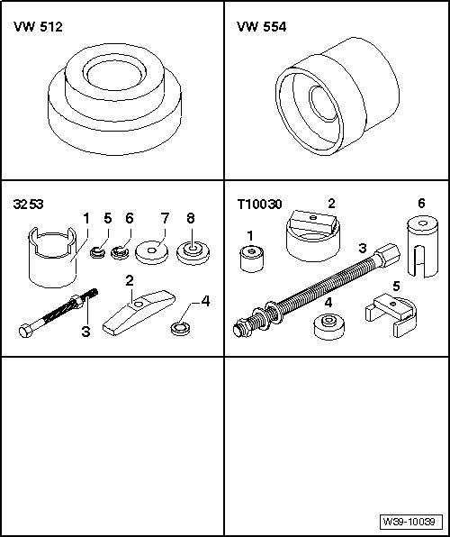
Special tools, testers and auxiliary items required
• Thrust pad (VW 512)
• Thrust piece (VW 554)
• Alignment fixture (3253)
• Alignment fixture (T10030)
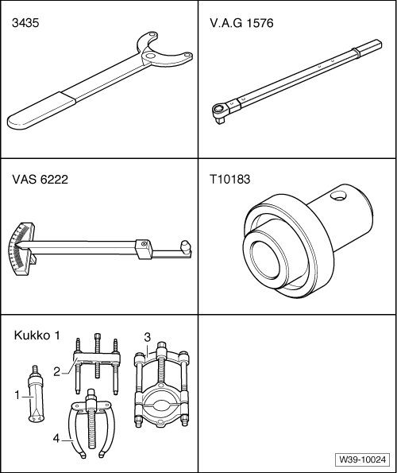
Special tools, testers and auxiliary items required
• Retainer (3435)
• Torque wrench (VAG 1576)
• Friction meter (VAS 6222)
• Thrust piece (T10183)
• - 3 - - Kukko 17/2 Separating device
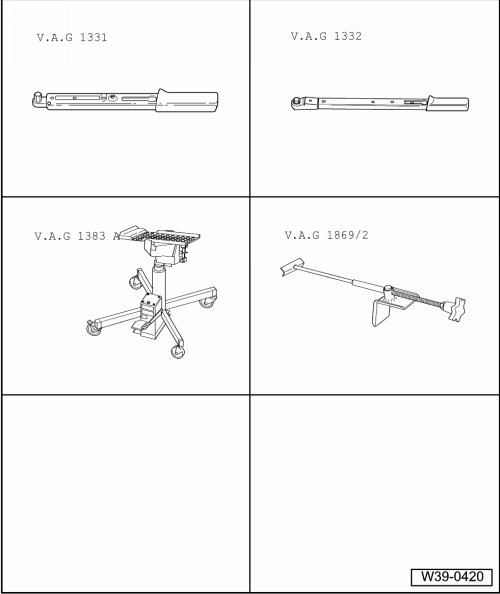
Special tools, testers and auxiliary items required
• Torque wrench (VAG 1331)
• Torque wrench (VAG 1332)
• Engine and transmission jack (VAG 1383 A) with universal transmission adapter (1359/2)
• brake pedal loading device (VAG 1869/2)
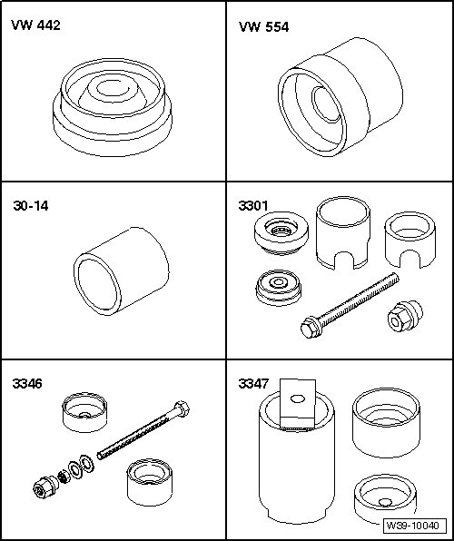
Special tools, testers and auxiliary items required
• Thrust piece (VW 442)
• Thrust piece (VW 554)
• Sleeve (30 - 14)
• Alignment fixture (3301)
• Alignment fixture (3346)
• Alignment fixture (3347)
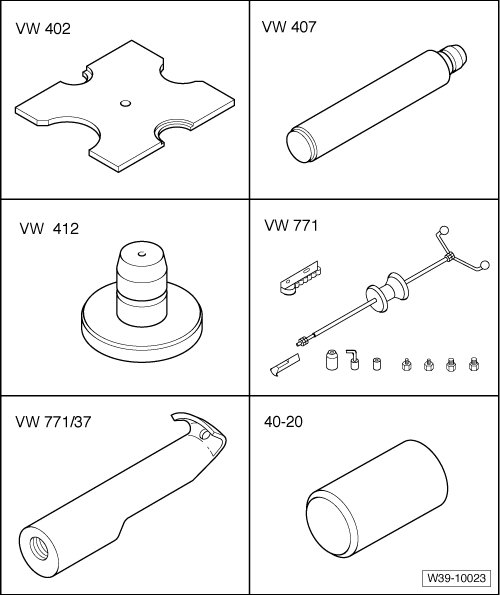
Special tools, testers and auxiliary items required
• Pressure plate (VW 402)
• Punch (VW 407)
• Punch (VW 412)
• Slide hammer (VW 771)
• Pulling hook (VW 771/37)
• Seal driver-front wheel bearing (40 - 20)